Algorithm Overview
RIT* extends BIT* by replacing Euclidean geometry with a smooth Riemannian metric field that encodes obstacle proximity and task-relevant cost structure. The informed set, nearest-neighbour search, and edge cost are all computed under this metric, so sampling and graph construction naturally align with the true cost landscape. A three-level cascading edge filter (L1/L2/L3) reduces integration work by roughly 6×, and CARM learns the metric on-the-fly from collision feedback when no prior cost model is available.
2-D Planning Demos
Each pair shows the search tree growth for RIT* (base metric) on the left and RIT* + CARM on the right. CARM learns the obstacle structure on-the-fly and guides sampling accordingly.
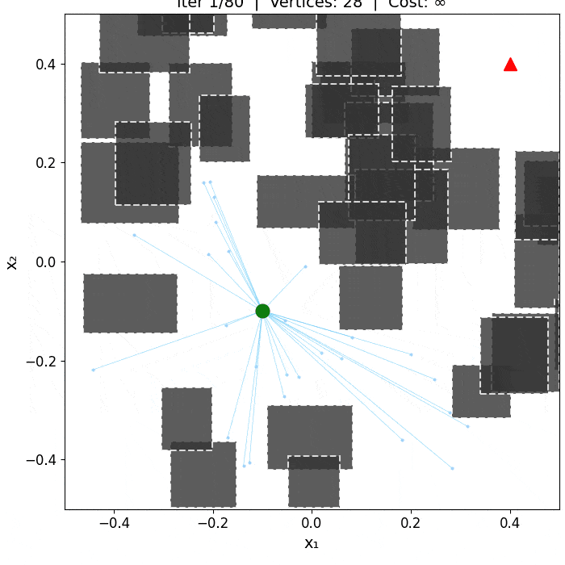
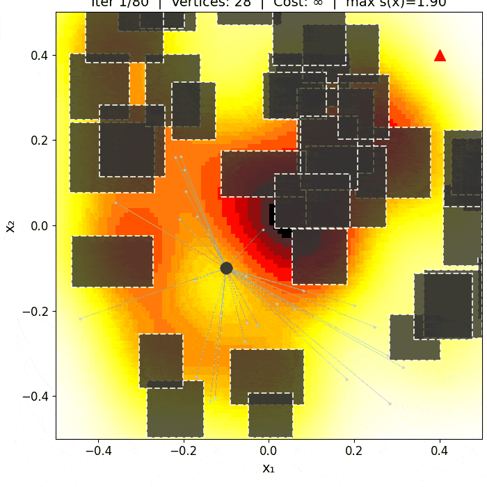
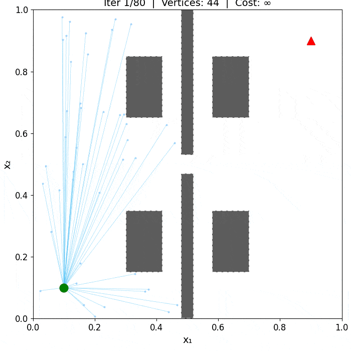
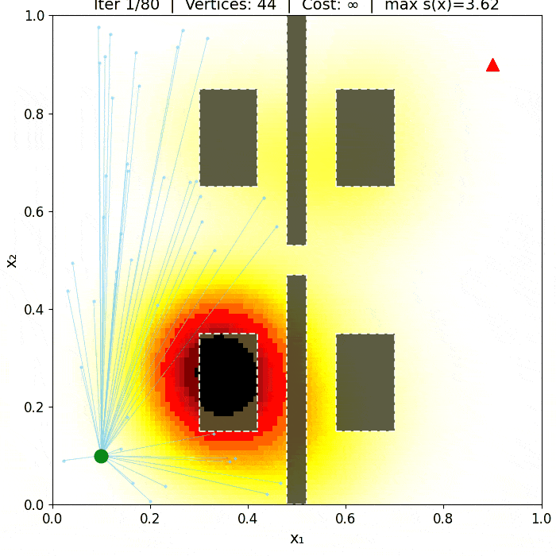
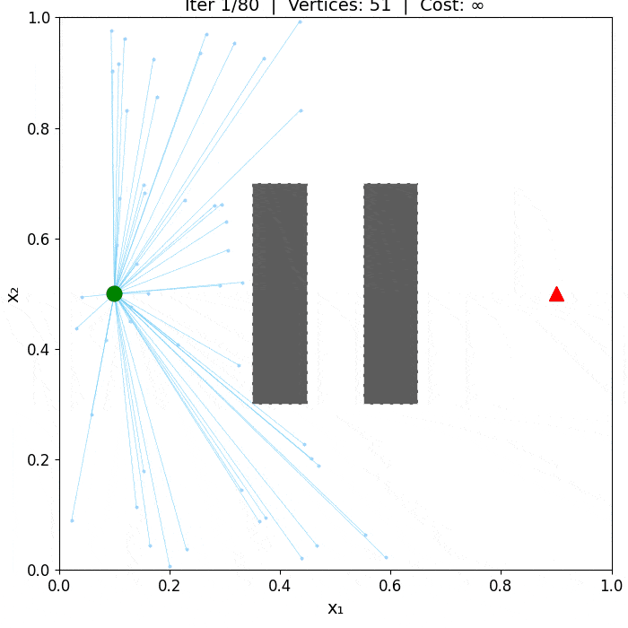
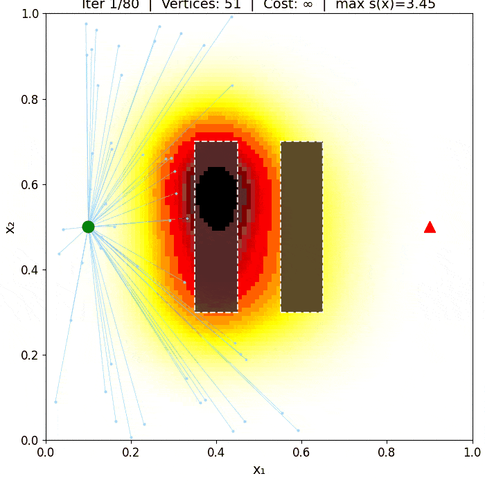
3-D Environments
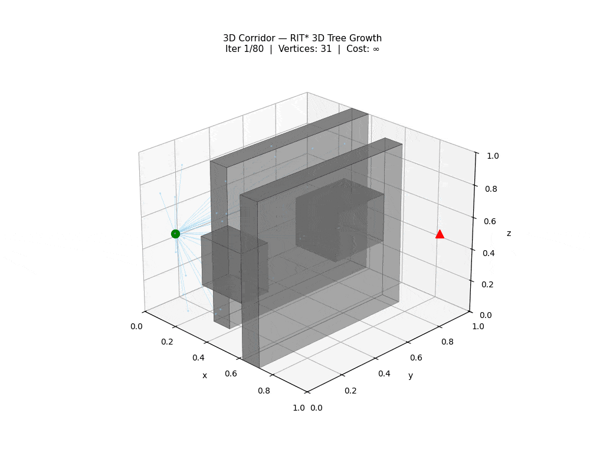
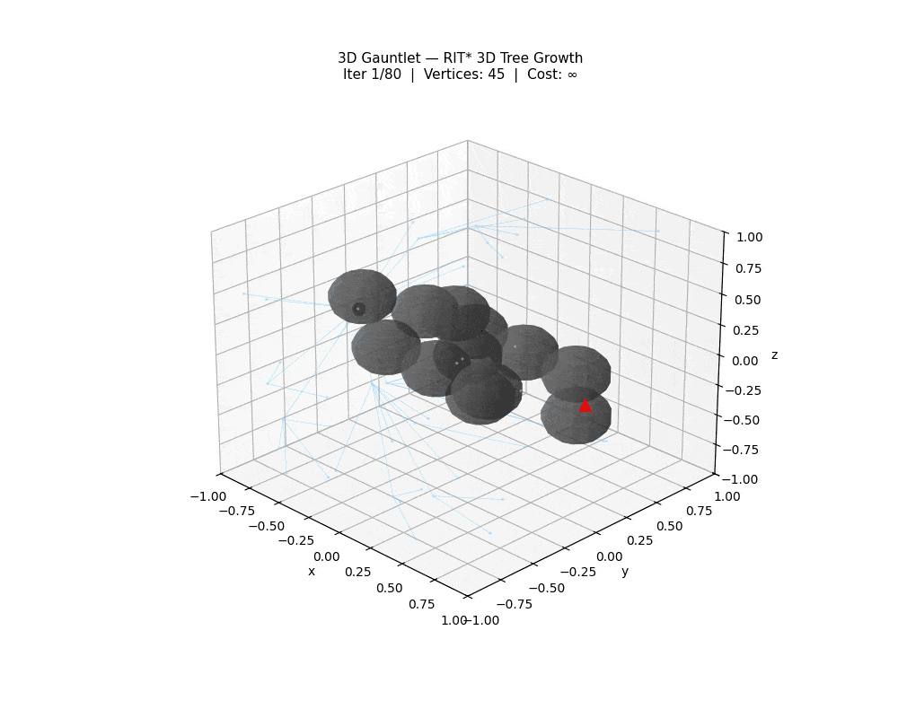
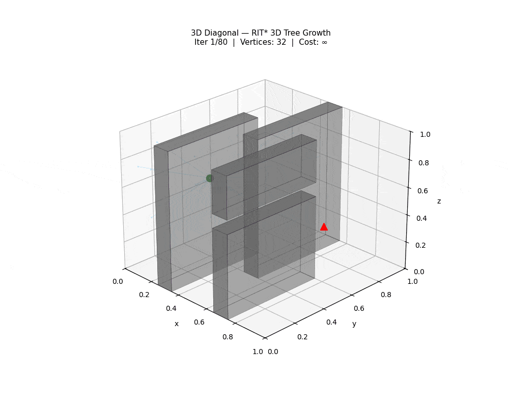
Path Quality Comparisons
Final paths found by all six planners (RIT*, BIT*, Informed RRT*, AIT*, EIT*, APT*) overlaid on each environment. All paths are evaluated under the oracle Riemannian metric for a fair comparison.
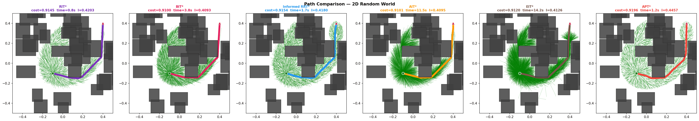
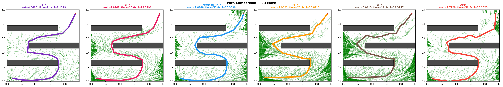
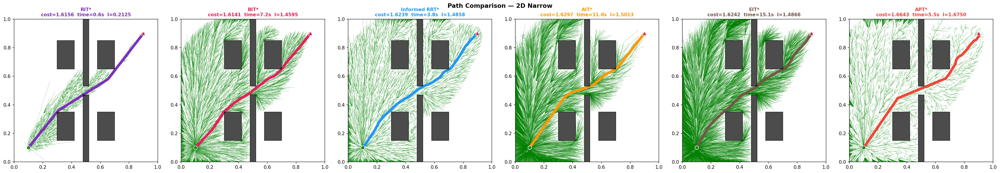
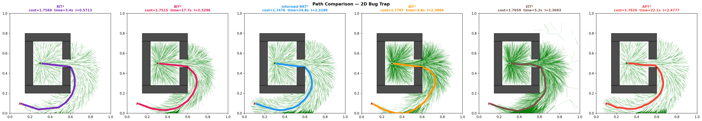
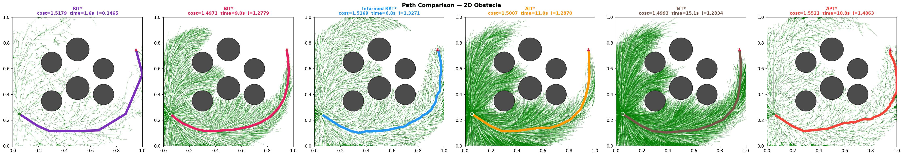
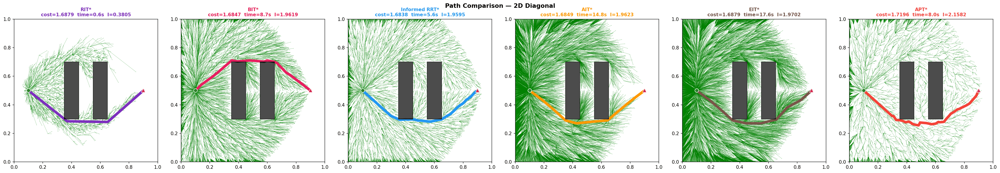
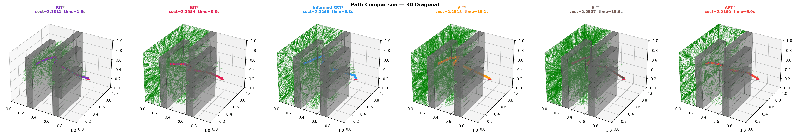
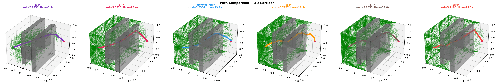
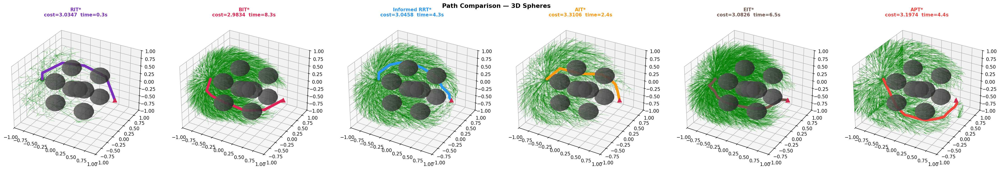
Real Robot Demonstrations Real Robot
Plans generated in simulation were transferred without modification to a physical UR10e manipulator, demonstrating reliable sim-to-real transfer. All paths were planned in 6-D joint space using a PyBullet collision checker and executed open-loop on hardware.
Manipulation Simulation Demos Simulation
Simulation demonstrations of RIT* planning for 6-D and 14-D manipulator tasks in PyBullet. Environments include shelf grasping, over-wall pick-and-place, and bimanual planning with the PAL Tiago Pro in 14-D joint space.
Method Details
Riemannian Metric Field & Informed Sampling
Standard planners such as BIT* define their informed set and nearest-neighbour search using Euclidean distance, which ignores the true cost structure when the environment is anisotropic. RIT* instead equips the configuration space with a smooth metric tensor field G(x) that stretches space near obstacles: moving through a high-cost region counts as farther, so the planner naturally finds paths that curve away from obstacles.
Once a first solution is found, subsequent samples are drawn from a Riemannian informed set — the region of configurations that could still improve the current path under the Riemannian cost. This set is tighter than its Euclidean counterpart because it is aligned with the actual cost landscape. To sample it efficiently, the metric is averaged along the start-to-goal segment and a whitening transform maps the informed set to a standard ellipsoid, where direct sampling applies. The result is that each new sample is more likely to be useful, accelerating convergence.
Cascading Edge Evaluation (L1 / L2 / L3)
Computing the exact Riemannian cost of an edge requires numerical integration along the edge — multiple metric evaluations per candidate. Most candidate edges, however, cannot possibly improve the current solution and are a waste of computation. RIT* screens edges with a three-level cascade of increasing accuracy, discarding unpromising ones as early as possible.
L1 (midpoint check): a single metric lookup at the edge midpoint gives a cheap lower-bound estimate. This alone rejects 78–85% of all candidates across 2-D to 14-D benchmarks. L2 (Simpson estimate): surviving edges are re-evaluated with three-point Simpson's rule, capturing metric variation along the edge; roughly 75% of remaining candidates are rejected here. L3 (full quadrature + collision check): only the ~5% of edges that pass both levels receive full 10-point Gauss-Legendre integration followed by the collision check. The cascade reduces the average number of metric evaluations per edge from 10 down to approximately 1.6.
CARM — Collision-Adaptive Metric Refinement
In practice the true cost model is rarely known in advance. CARM removes this requirement by learning the metric on-the-fly from the collision feedback that the planner accumulates naturally during planning. Every time an edge is rejected by the collision checker, the contact point is recorded. At regular intervals, a kernel density estimator over these collision points produces a smooth obstacle-proximity field, which is applied as a conformal scaling of the base metric.
The effect is intuitive: regions where many collisions occur become "expensive" in the metric, steering the informed set and the nearest-neighbour search away from those regions without any prior knowledge of the obstacle geometry. CARM requires no pre-built obstacle map — it defaults to Euclidean and learns from scratch. The overhead is less than 1% of total planning time, and the solution quality matches a planner that has access to the full obstacle geometry.
Citation
If you use RIT* in your research, please cite our IEEE Robotics and Automation Letters paper: